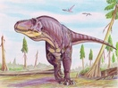

Gigantosaurus - Odkryty po raz pierwszy w Ameryce Południowej
w 1993 r., należał do największych mięsożernych dinozaurów. Mógł on ważyć aż 8 ton.
Polował, a może też rabował cudzą zdobycz, odstraszając od niej inne drapieżniki.
Stenonychosaurus - W stosunku do masy ciała I Stenonchosaurus
I miał największy mózg ze wszystkich dinozaurów. Miał również wielkie oczy o średnicy
około 5 cm. Był smukłym stworzeniem o budowie przystosowanej do szybkiego biegu;
prawdopodobnie polował w nocy
Velociraptor - Szybko poruszający się myśliwy, miał
Velociraptordługą głowę z płaskim pyskiem. W Mongolii znaleziono
dwa sfosylizowane szkielety, pokazujące, że Velociraptor zwarł się w walce z rogatym
dinozaurem protoceratorem. Być może obydwa zwierzaki zginęły w burzy piaskowej jaka
rozpętała się w trakcie ataku.
Dromaesaurus - Podobnie jak Deinonychus, również ten dinozaur
miał wielkie, zakrzywione pazury na stapach, które służyły mu jako śmiercionośna
broń. Zaciekły, szybko poruszający się drapieżnik, prawdopodobnie polował w stadach,
co pozwalało mu zwyciężać zwierzęta znacznie większe od niego samego.
Aurornihoides - Tak jak Stenonychosaurus,
ten dinozaur miał duży mózg i prawdopodobnie dobrze rozwinięte zmysły.
Wielkie oczy sugerują, że mógł być aktywny nocą-polować na małe gady i inne stwożenia.
Homalocefal - roślinożerny dinozaur z infrarzędu pachycefalozaurów.
Żył na terenie dzisiejszej Mongolii w późnej kredzie około 80 milionów lat temu.
Długość: około 3 metry;
Wysokość: około 1,2 metry;
Waga: około 70 kg.
Miał płaską głowę guzy i kolce na szczycie czaszki i w okolicy policzków oraz długie
nogi, których używał do ucieczki, gdy wyczuł lub zobaczył drapieżnego dinozaura
Stegoceras – dinozaur z rodziny pachycefalozaurów. Prawdopodobnie
żył w stadach. Można go było spotkać w lesie i na brzegach rzek i jezior gdzie szukał
pożywienia. azwę Stegoceras nadał dinozaurowi Lawrence Lambe w 1902 roku. Jego nazwa
oznacza "rogate sklepienie".
Lesotozaur - dwunożny, roślinożerny dinozaur.Znaczenie jego nazwy
- jaszczur z Lesotho Należał do najmniejszych dinozaurów: ocenia się, że mierzył
1 m długości i ważył 7 kg. Żył około 200 milionów lat temu. Jest jednym z najwcześniejszych
i naprymitywniejszych przedstawicieli dinozaurów ptasiomiednicznych - przypuszcza
się, że właśnie od niego może pochodzić ten rząd dinozaurów.Jego skamieniałości
znaleziono w Lesotho w Afryce południowej. Posiadał długie, wysmukłe nogi i cienki
ogon. Przypominał trochę jaszczurkę. Lesotozaur miał twardą głowę i pysk podobny
do dzioba
Yangchuanosaurus - drapieżny dinozaur z rodziny sinraptorów Żył w
okresie późnej jury na terenach Azji. Długość ciała 8-10 m, , wysokość ok. 2,5 m,
ciężar ok. 3,5 t.
Yangchuanosaurus Jego szczątki znaleziono w Chinach.
Deinocheir - dwunożny późnokredowy teropod znany jedynie z jednej
pary olbrzymich przednich kończyn długości 2,4 metra (pazury 25 cm) znalezionych
na pustyni Gobi w południowej Mongolii przez polskich paleontologów Halszka Osmólska
i Ewa Roniewicz w 1970, oprócz nich odnaleziono jeszcze pozostałości żeber i kręgów.
Odlew kości kończyn przednich deinocheira można podziwiać w warszawskim Muzeum Ewolucji.
Żył 70 milionów lat temu.
Monoklonius - dinozaur z rodziny ceratopsów; jego nazwa znaczy "jednorogi".Żył
w okresie późnej kredyna terenach Ameryki Północnej. Długość ciała do 6 m. Jego
szczątki znaleziono w USA. Monoklonius znaczy "jeden trzonek" i odnosi się do budowy
zębów, a nie jak się powszechnie sądzi do pojedynczego rogu na nosie. Jest mylony
z centrozaurem. Zapewne był stadnym roślinożercą. Obecnie uważa się pierwotny materiał
typowego gatunku za diagnostyczny na podstawie cech kości ciemieniowej Kość ta różni
się od innych centrozaurynów prostym brzegiem i jest dość cienka. Te cechy są powszechne
u niedorosłych przedstawicieli tej podrodziny. Pozwala to przypuszczać, że są to
szczątki właśnie niewyrośniętego osobnika.
Giganotozaur - dinozaur mięsożerny zaliczany do rodziny karcharodontozaurów
i podrodziny Giganotosaurinae. Jeden z największych drapieżnych dinozaurów, większy
od tyranozaura, choć mniejszy od spinozaura Jego szczątki znaleziono w osadach pochodzących
z późnej kredy, z turonu, po raz pierwszy w 1993 roku w Argentynie na terenie dzisiejszej
Patagonii, w prowincji Neuquen bardzo bogatej w szczątki innych dinozaurów.
Giganotozaur Po raz pierwszy szczątki zostały opisane w
1995 przez dwóch Argentyńczyków, Leonarda Salgao i Rodolfo Corię. Jego przednie
łapy były dłuższe niż u tyranozaura. Przy polowaniach posługiwał się szczękami z
dwudziestocentymetrowymi zębami oraz masywnymi, uzbrojonymi w trzy 10 cm długości
pazury łapami. Długość czaszki największego osobnika szacuje się na około 195 cm.
Prawdopodobnie polował w grupach na olbrzymie zauropody z grupy tytanozaurów, takie
jak mogące osiągać ponad 30 m długości argentynozaury.
Triceratops -jest najlepiej poznanym przedstawicielem ceratopsów.
Triceratops był dużym, masywnym ceratopsem z pokaźną kryzą kostną zbudowaną z litej
kości, która u większości innych ceratopsów, takich jak np. chasmozaur, była ażurowa.
Kryza chroniła barki i była odporna na ciosy zadawane przez inne dinozaury. Kołnierz
był obrzeżony kośćmi napotylicznymi (czyli guzkami, kolcami itp.). Triceratops miał
trzy rogi.
Triceratops Dwa nad oczodołami, które osiągały nawet 1,2 metra
długości oraz jeden gruby i krótki na nosie. Triceratops miał masywne kończyny tylne
i silne, ale nieco mniejsze kończyny przednie, które wraz z masywną szyją musiały
dźwigać jego niezwykle ciężką głowę. Z przodu głowy umieszczony był krótki dziób,
który w przedniej części był bezzzębny. Z tyłu triceratops miał krótki i mięsisty
ogon. Jego ciało pokrywała łuskowata skóra.
Tarbozaur - rodzaj wielkich wymarłych dinozaurów drapieżnych, żyjący
na terenie dzisiejszej pustyni Gobi w Azji pod koniec późnej kredy (kampan, mastrycht).
Obecnie uznawany jest tylko jeden gatunek - Tarbosaurus bataar. Do 2006 roku opisano
skamieniałości około 100 osobników tego gatunku, z tym że tylko kilkanaście w miarę
kompletnych.Pierwsze szczątki tarbozaura znaleziono w Mongolii i opisano w 1955
jako Tyrannosaurus bataar. Jednak późniejsze badania doprowadziły już w 1965 do
zaliczenia ich do nowego rodzaju Tarbosaurus, z czym zgodził się także autor pierwotnego
opisu tych skamieniałości jako tyranozaura Malejew (1974). Od 1988 ukazało się kilka
prac zaliczających badane okazy do rodzaju Tyrannosaurus, były też jednak publikacje,
w których opowiedziano się za pozostawieniem ich w rodzaju Tarbosaurus, a nawet
zaliczeniem do nowego rodzaju Jenghizkhan. Szczegółowa analiza porównawcza szkieletów
Tarbosaurus bataar i Tyrannosaurus rex przeprowadzona w 2003 wykazała, że są to
różne rodzaje.

Tarbosaurus W osadach kredowych pustyni Gobi zarówno w części
leżącej na terytorium Mongolii jak i Chin znaleziono także wiele skamieniołości
dużych drapieżnych dinozaurów zaliczonych pierwotnie do następujących taksonów:
Tarbosaurus efremovi, Maleevosaurus novojilovi, Gorgosaurus lancinator, Gorgosaurus
novojilovi, Shanshanosaurs huoyanshanensis. Jednak późniejsze badania doprowadziły
do niekwestionowanej obecnie konkluzji, że są to wszystko osobniki należące do Tarbosaurus
bataar, a drobne róznice w stosunku do holotypu wynikają z różnic osobniczych oraz
z faktu, iż część okazów reprezentuje stadia młodociane. Prawdopodobnie rówież Chingkankousaurus
jest młodszym synonimem tarbozaura. Kontrowersyjny jest także sam człon gatunkowy
nazwy tarbozaura "bataar", gdyż Malejew zrobił błąd, przyjmując, że po mongolsku
słowo "bohater" pisze się "bataar", podczas gdy prawidłowo powinno być "baatar".
Jednak nazwy gatunków nie mogą być zmieniane ze względu na występowanie w nich błędów
językowych i dlatego ta błędna nazwa jest oficjalną nazwą gatunku.